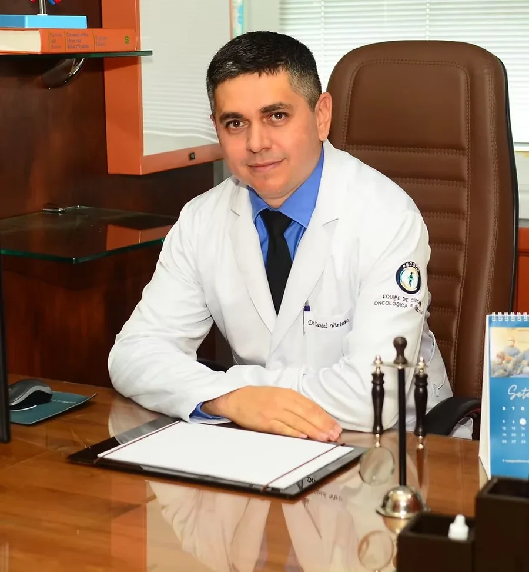

Cirurgião do aparelho digestivo e videolaparoscopia em Salvador.
Mais de 10 anos em cirurgias abdominais por videolaparoscopia — da vesícula ao fígado —, com atuação em hospitais de Salvador.
Cirurgia geral e do aparelho digestivo
Procedimentos de pequena a alta complexidade, sempre que possível por videolaparoscopia — técnica minimamente invasiva.
Cirurgia da vesícula
Colecistectomia por videolaparoscopia para cálculos e pólipos da vesícula biliar.
Cirurgia do fígado
Hepatectomia — ressecção de lesões hepáticas, incluindo casos complexos.
Cirurgia do estômago
Gastrectomia para o tratamento de tumores e doenças gástricas.
Cirurgia do intestino
Colectomia e reconstrução de trânsito intestinal, com técnica adequada a cada caso.
Cirurgia do pâncreas e duodeno
Gastroduodenopancreatectomia (procedimento de Whipple).
Transplante hepático
Atuação como membro de equipe de transplante de fígado no Hospital Português.
Cirurgia minimamente invasiva, do diagnóstico ao pós-operatório
Videolaparoscopia
Quando indicada, a técnica usa pequenas incisões — costuma significar menos dor e recuperação mais rápida.
Estrutura hospitalar
Cirurgias realizadas em estruturas hospitalares de Salvador.
Experiência em casos complexos
Mais de uma década dedicada a casos delicados do aparelho digestivo.
Do primeiro contato ao acompanhamento
Contato
Fale pelo WhatsApp e agende a sua avaliação no melhor horário.
Avaliação
Consulta detalhada, com análise da sua história clínica e dos exames.
Plano cirúrgico
Indicação clara, com a técnica mais adequada para o seu caso.
Cirurgia e acompanhamento
Procedimento e seguimento atento no pós-operatório.
Técnica e estrutura adequadas para cada caso
Há mais de 10 anos dedicado à cirurgia geral e do aparelho digestivo, o Dr. Daniel Viriato atua de procedimentos de rotina a casos complexos, com domínio da videolaparoscopia. Formado em Medicina pela UFBA, integra a equipe de Transplante Hepático do Hospital Português desde 2015.
- Graduação em Medicina — UFBA (2001–2007)
- Residência em Cirurgia Geral — Hospital Universitário Professor Edgard Santos (HUPES/UFBA)
- Residência em Videolaparoscopia — Hospital Ana Nery
- Equipe de Transplante Hepático — Hospital Português (desde 2015)
Atendimento em hospitais de Salvador
Consultas e cirurgias realizadas em hospitais e clínicas da capital baiana.
Dúvidas frequentes
O que é videolaparoscopia?
É uma técnica cirúrgica minimamente invasiva: em vez de um corte grande, são feitas pequenas incisões por onde passam uma câmera e os instrumentos. Quando indicada, costuma significar menos dor e recuperação mais rápida — a indicação depende da avaliação de cada caso.
Preciso de encaminhamento de outro médico?
Não é obrigatório. Você pode agendar uma avaliação diretamente. Se já tiver exames e laudos, leve-os à consulta para uma análise mais completa.
A cirurgia é feita em qual hospital?
Conforme o seu caso, em hospitais de Salvador como Hospital Português, Hospital da Bahia e Hospital Santa Izabel. O local é definido na avaliação.
Atende convênio ou particular?
Fale pelo WhatsApp para confirmar as condições de atendimento e o hospital indicado para o seu caso.
Como é a recuperação após a cirurgia?
A recuperação varia conforme o procedimento realizado e as características de cada paciente. Você recebe orientações detalhadas de pós-operatório e acompanhamento ao longo do processo.
Fale com o Dr. Daniel Viriato
Agende sua avaliação com o Dr. Daniel Viriato
Tire suas dúvidas e entenda o melhor encaminhamento para o seu caso, com clareza e segurança.
Agendar minha avaliação